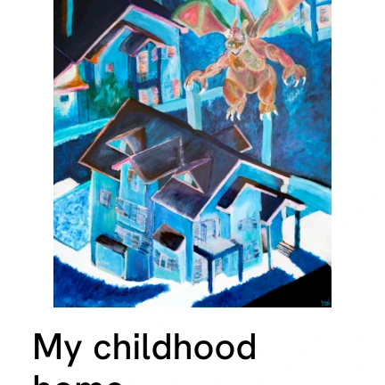
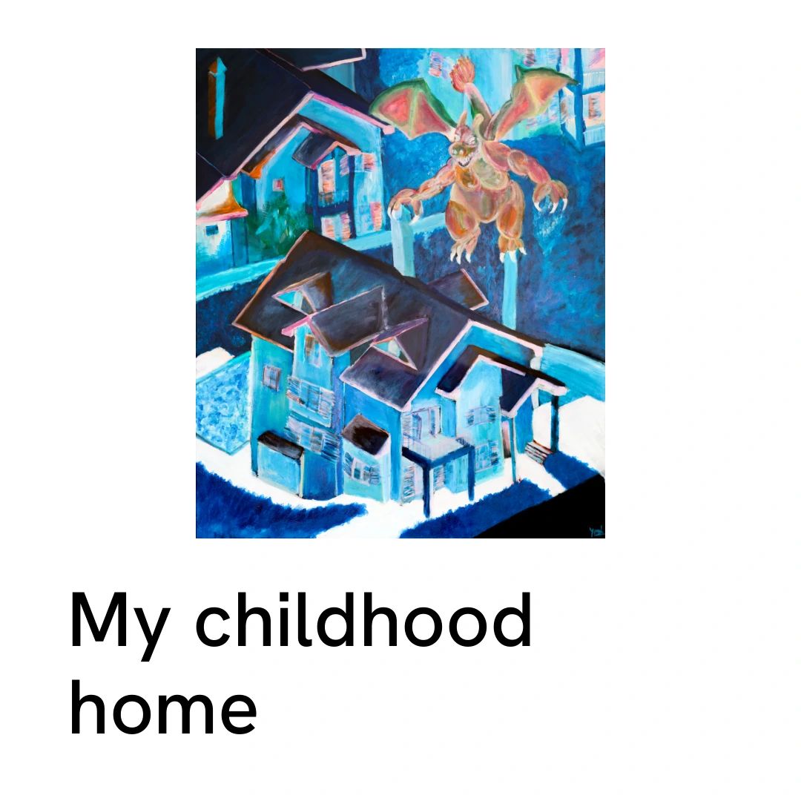

That dragon is standing over my childhood home.
My childhood home
Ev ve ziyaretçi aynı bütün içinde görülür; kişisel anlatının mekân kanıtı korunur.
- Griddeki görevi
- Ardından gelecek Gary ve Cellular bedenlerine karşı ilk mekânsal dayanak.
- Korunan görsel bilgi
- Alt evin kapısı, çatısı ve üstteki kanatlı figür.
- Kaynak ve dosya
- A1378 · 1080 × 1920 px · question
Kırpma, ilk kare ve kontrol notları


Kare uyarlama WebP dosyasını indir

Yerel 3:4 kırpma geometrisi kontrolü: geçti.
Kare merkez kırpma bu kapağın görsel bilgisini kesiyor. Kare yüzey seçilirse aşağıdaki ayrı uyarlamayı kullanın.
İlk kare / ilk sayfa: Bu bir Reel kapağıdır; videonun ilk karesi değildir. İlk kare mevcut kurgu planındaki gerçek hareketi/anlatıyı başlatmalı; bu durağan kapak videoya otomatik eklenmez.
Bakılacak nokta: Başlık bandı görseli küçültür; konu olan ayrıntının 3:4 küçük gridde okunması ve metnin esere taşmaması kontrol edilmeli.
Yerel tasarım üretildi. Gerçek yükleme yolundaki mobil önizleme, cover seçimi ve kırpma konumu henüz onaylanmış değil.
İngilizce caption ve künye
That is the house I grew up in. Putting a childhood character above it changes the feeling of a familiar place.
A visitor can suggest a return, but also a threat.
Angora Mergvs
2026 · Acrylic on canvas
120 × 100 cm (h × w).